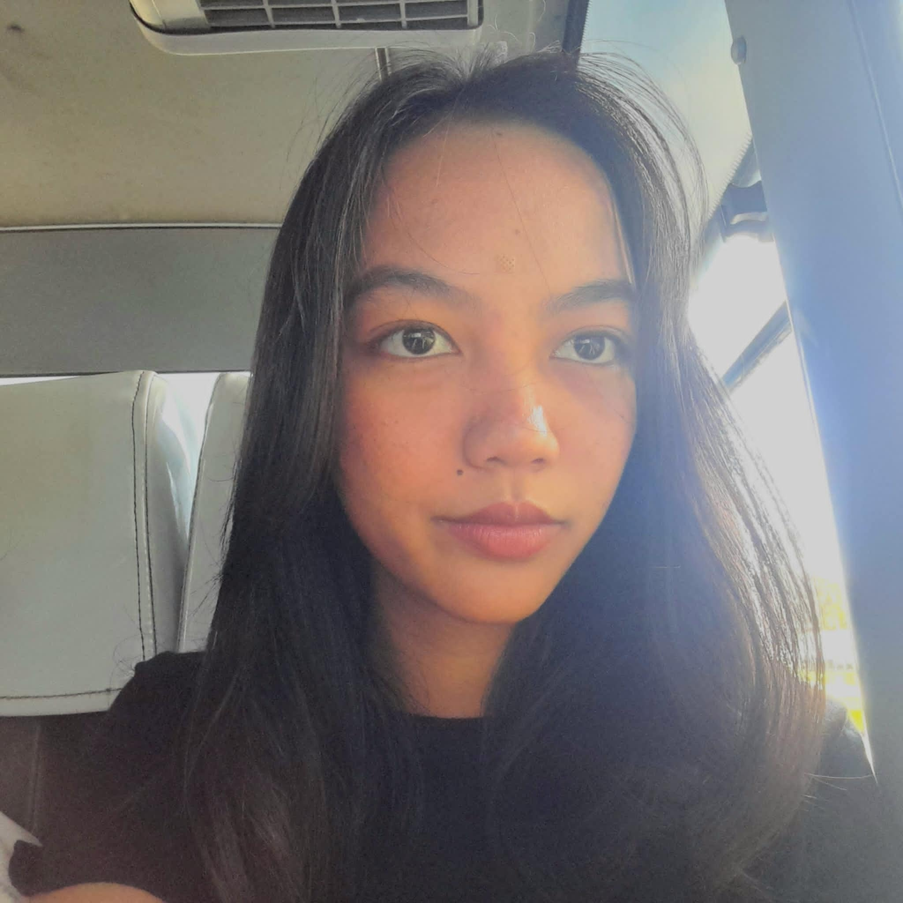

I engineer, deploy, and maintain high-performance digital assets. As an IT student at Central Philippine University, I specialize in bridging the gap between robust backend logic and elegant, award-winning UI/UX.
